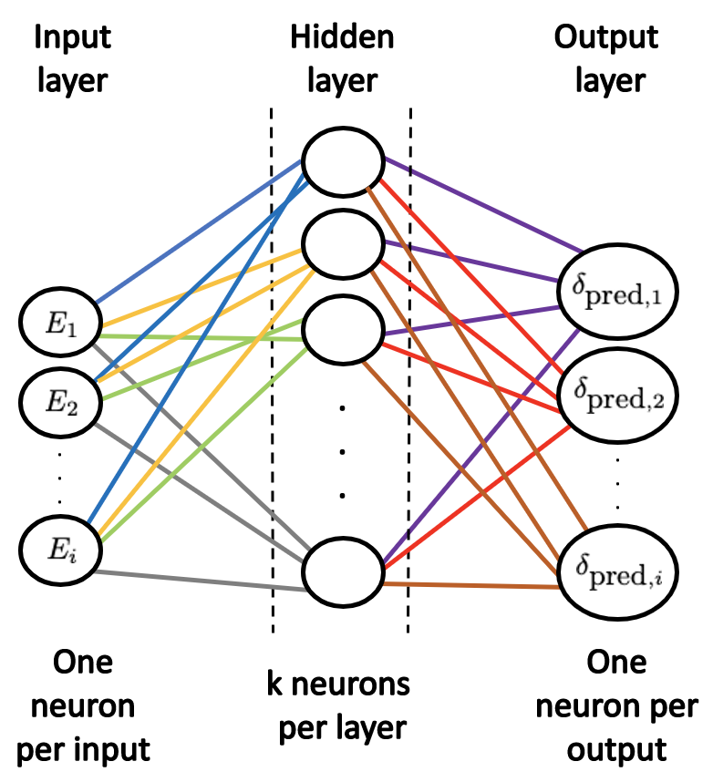

9.4. What Are Neural Networks?¶
Notes by Alberto Garcia (2021)
A neural network (NN) is a machine learning technique that follows a set of rules with the purpose of recognizing patterns. Once the neural network learns these patterns, it can be used to make predictions. The idea of a neural network came from studying how a brain interprets and predicts outcomes. This led to the idea of writing an algorithm that mimics the brain, which is how neural networks were developed.
The neural networks used in machine learning are called artificial neural networks, as opposed to real neural networks contained in the brain. They are made up of three different components: an input layer, hidden layer(s), and an output layer.

The input layer is used to pass in whatever we are inputting into the neural network. The hidden layers are responsible for learning how to map the input to the output. The output layer is responsible for giving us the outputs of the neural network given our inputs.
A neural network can learn three different ways: supervised, unsupervised, and reinforced. I will only comment on the first two. In supervised learning, the desired output is already known and the neural network will modify itself until the it obtains the desired result. In unsupervised learning, the desired output is not known. The neural network will be trained and tested against known data. A cost function then tells the neural network how far off the target it was. The neural network will then retrain and retest for better accuracy.
More information can be found at:
https://towardsdatascience.com/understanding-neural-networks-what-how-and-why-18ec703ebd31
https://towardsdatascience.com/first-neural-network-for-beginners-explained-with-code-4cfd37e06eaf
Different types of neural networks¶
There are many different types of neural networks currently being used by data scientists around the world, but the most common are: perceptron, feed forward, recurrent, and convolutional.
The perceptron is composed of an input and output layer. The only pattern this type of neural network is able to learn is linear patterns. The feed-forward neural network, also known as a multi-layer perceptron, is composed of an input layer, hidden layers, and output layer. It is not limited to learning linear patterns, but data only moves in one direction.
How do neural networks actually work?¶
The key of neural networks is that the layers transform the inputs using a series of mathematical operations in order to learn how to map the inputs to the outputs while producing good predictions.
Say we have a set of data composed of \(x\)’s and \(y\)’s. This data would be split into what are known as training and testing data sets, with both sets containing \(x\) and \(y\) values. The training set is used to train the neural network. This is what gets inputted into the model and gets weights assigned to. The testing set is used to test the newly trained neural network. Once the model gets trained using the training set, it will be used to predict the \(y\) values from the testing set by using the corresponding \(x\) testing set values. An error that tells you how well your neural network did is then calculated. You can also add a bias to the neural network. This is an extra input, usually denoted as \(b\) or \(w_0\), with no weights associated to it. The bias is there to ensure that even when there is a \(0\) input, that neuron will still activate.

Taken from: https://skymind.ai/wiki/neural-network
We are given a vector of inputs \(X = (x_1, x_2, x_3, ..., x_n)\). These inputs are then assigned weights \(W = (w_1, w_2, w_3, ..., w_n)\). The weights are randomly initialized using initializers. The inputs and weights are then multiplied and passed into each node of the hidden layer. All the neurons in a hidden layer are connected to each and every neuron in the next layer, therefore, each node will receive all of the available data. The results are summed up using a dot product
and passed into an activation function assigned to the hidden layer used to transform the data. The model then outputs a predicted target value \(Y = (y_1, y_2, y_3, ..., y_n)\). This process is known as forward-propagation. Now, we calculate the error between the predicted target value and the actual value using a loss function. If the error is too large, we get what’s known as back-propagation. This is the process of adjusting the weights for accuracy by minimizing the error. This is done by taking the derivative of the error with respect to every weight in the neural network. These derivatives are known as gradients. We then subtract this gradient from its corresponding weight in order to reduce the error by moving closer to the minimum loss. This is known as gradient descent, by far the most popular optimizer. This process is repeated until a desired accuracy has been reached. Once this is the case, the calculated \(Y = (y_1, y_2, y_3, ..., y_n)\) are sent to the output layer.
The mapping from input layer to output layer can be summarized by
where \(b\) is the bias and \(f\) is the activation function.
Care must be taken when calculating the gradients. If the derivative is too small, the network will become increasingly difficult to train. This is seen for deep neural networks when choosing an inappropriate activation function, like the sigmoid, since a large change in the input of the sigmoid function will cause a small change in the output.
How is the error calculated?¶
When building a model, we always seek to minimize the error as much as possible. This error is calculated by what’s known as a loss function. The loss function can be written many different ways, but the most common is mean-square-error defined as
where \(y^{(i)}_P\) is the \(i\)th predicted value, \(y^{(i)}_T\) is the \(i\)th true or expected value, and \(N\) is the number of data points. This loss function takes the square of the difference between the predicted and expected values and sums them up.
Another example of a loss function is known as the correlated loss function, defined as
where \(W\) is a correlation matrix and \(W_{i,j}\) are its elements, and \(R_i\) and \(R_j\) are the residuals of the \(y^{(i)}_T\) and \(y^{(i)}_P\), written as \(R_i = y^{(i)}_T - y^{(i)}_P\) and \(R_j = y^{(j)}_T - y^{(j)}_P\). This loss function is used to link the previously predicted value with the next. This is how it gets the name correlated loss function, since it correlates the data points. If the correlation matrix \(W\) is diagonal and it’s elements equal \(1\) (\(W_{i,j} = \delta_{i,j}\)), we get back the mean-square-error function.
We can also add what’s known as regulators. These are used to penalize the loss function to prevent the weights from blowing up. This serves to prevent overfitting, which is when the model learns the given data too well and does not generalize to other data. The two popular types of regulators are known as Ridge Regression (L2 norm) and LASSO (L1 norm). I will quote them in the order listed, but not discuss them.
Purpose of an activation function¶
The purpose of an activation function is to introduce non-linearity to the neural network. Even if the initial data is uniform and scaled, they can easily blow up once they start getting multiplied by weights and summed up. The activation function forces these values back into a manageable range by rescaling them. It’s important to note that activation functions only reside in neurons from hidden and output layers, not input layers.
Examples of popular activation functions are the hyperbolic tangent, \(\tanh(z)\), which rescales the data between \([-1,1]\), and the sigmoid, \(f(z) = \frac{1}{1 + e^{-z}}\), which rescales the data as a continuous range of values between \([0,1]\).
What is an optimization algorithm?¶
An optimization algorithm is an algorithm used to minimize the error (loss) as discussed previously. They involve a variable known as the learning rate. This variable ensures that the weights are not changing too fast by scaling the gradients. The most popular is gradient descent, which we already mentioned. Another one more commonly used is known as adaptive moment estimation (ADAM). This works by adding fractions of the previous gradients to the current ones.
A physics example: phase shifts¶
Let’s assume we have a dataset that contains scattering energies and their corresponding wave number \(k\), phase shifts \(\delta\), and scattering amplitudes \(\tau\).
\(E\) |
\(k\) |
\(\delta\) |
\(\tau\) |
|---|---|---|---|
\(E_1\) |
\(k_1\) |
\(\delta_1\) |
\(\tau_1\) |
\(E_2\) |
\(k_2\) |
\(\delta_2\) |
\(\tau_2\) |
\(\vdots\) |
\(\vdots\) |
\(\vdots\) |
\(\vdots\) |
\(E_N\) |
\(k_N\) |
\(\delta_N\) |
\(\tau_N\) |
One input, one output¶
Let’s first assume we are trying to predict \(\delta\) with only the energies \(E\). We can write these values as vectors:
that compose dataset \(d\). The first step of the process is to normalize and split the dataset into training and testing sets. There are a few ways of doing it, but the python library sklearn has a function called train_test_split. We pick a percentage of the original dataset \(d\) to be the testing set and we shuffle the dataset before splitting to ensure that the model is as generalized as possible. We shall call the training vectors
and they now go up to index \(i\) where \(i < N\). The testing set will be
where the elements go up to index \(j\) where \(j < i\). A good split is usually \(20\%\) testing to \(80\%\) training.
We will no longer touch the testing dataset. Our focus will be solely on the training set. Assuming we have a \(2\)-layer neural network, one hidden layer with \(k\) neurons (\(i > k > j\)), the neural network will look like:
{kind=link}
Each line (known as synapse) connecting the input layer to the hidden layer corresponds to ALL the \(\vec{E}_{\mbox{train}}\) dataset (all the values of energy) getting passed into EACH node in the hidden layer. The hidden layer output is the predicted phase shifts. Each line connecting the input layer to the hidden layer is a weight, so each line going to the first neuron in the hidden layer represents \(w_{1}\), \(w_{2}\), \(\cdots\) \(w_{i}\). The rest of the weights follow suite. The weights for a specific energy for different hidden layer nodes in general are not the same. So even though we have one kind of input (call it a class), each point gets assigned a weight and is passed into each node of the hidden layer.
Let us look at one hidden layer neuron for simplicity:

The synapses connecting the hidden layer to the output are also weights obtained from the activation function. These weights tell you how the output should look according to their values. Once a predicted value for the phase shift is outputted, it is compared to the true value from the \(\vec{\delta}_{\mbox{train}}\) dataset. If the error given by the loss function is too large, we undergo back-propagation. The weights get adjusted by an optimization algorithm such as gradient descent, which is the process of adjusting the weights for accuracy by minimizing the error by taking the derivative of the error with respect to every weight in the neural network. The derivative is then subtracted from its corresponding weight. This process is repeated until a desired accuracy has been reached. The neural network now acts as a function where if you give it an input, it should give you an accurate output.
If we are using a sigmoid activation function \(f(z) = \frac{1}{1 + e^{-z}}\) for the hidden layer, the process would be:
where $\( 0 \le f(\vec{E}_{\mbox{train}} \cdot \vec{W} + b_0 w_0) \le 1. \)$
Usually, the output layer also has an activation function since the synapses between the hidden layers and the output also have weights. For a regression problem the common choice is linear since the values are usually unbounded. If working on a classification problem a common choice is softmax. In this case, we use a linear activation function. The mapping from input to output will then take the form:
The whole training process can be summarized by:

We can use mean-square-error for the loss function
where \(\hat{\delta}^{(i)}_{\mbox{pred}}\) is the \(i\)th predicted value, \(\delta^{(i)}_{\mbox{train}}\) is the \(i\)th true or expected value, and \(N\) is the length of the dataset. This loss function takes the square of the difference between the predicted and expected values and sums them up. If the error is below an imposed threshold the training process ends and we can move on to evaluating the testing dataset.
We can now evaluate how well the neural network works by giving it unknown data in the form of the testing dataset \(\vec{E}_{\mbox{test}}\) as an input and comparing the predicted phase shifts to the true values \(\vec{\delta}_{\mbox{test}}\). No training is done during the evaluation process. We will obtain some sort of percentage that tells us how well our model did in accurately predicting the values.
If we are content with the accuracy of the model, we can pass in any value of the scattering energy we want to predict and have it output its corresponding phase shift.